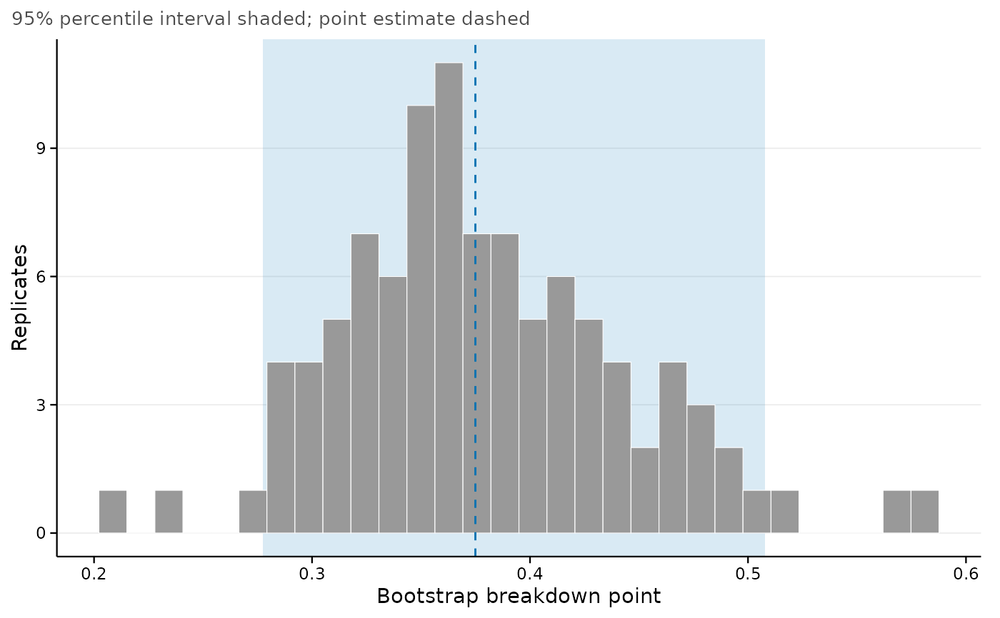

Print, summarize and plot a bootstrapped breakdown point
Source:R/bootstrap.R
regsen_boot-methods.Rdprint() gives the point estimate and the interval regsen_boot()
reported. summary() adds the analysis bootstrapped, both interval
types, the BCa constants, the distribution of the replicates (their
standard deviation is the bootstrap standard error) and the counts of
failed and infinite replicates. plot() draws the replicates with the
point estimate and the interval marked. confint() returns the interval
as a matrix, recomputing it from the stored replicates when level or
type differ from those of the run.
Usage
# S3 method for class 'regsensitivity_boot'
print(x, ...)
# S3 method for class 'regsensitivity_boot'
summary(object, ...)
# S3 method for class 'summary.regsensitivity_boot'
print(x, ...)
# S3 method for class 'regsensitivity_boot'
confint(object, parm, level = object$level, type = object$type, ...)
# S3 method for class 'regsensitivity_boot'
plot(x, bins = 30, base_size = 11, ...)Arguments
- x, object
A
regsensitivity_bootobject, or for theprint()method of its summary, asummary.regsensitivity_bootobject.- ...
Ignored.
- parm
Ignored; there is one parameter.
- level
Confidence level. Defaults to the level of the run.
- type
"bca"or"perc". Defaults to the interval the run reported."bca"needs the jackknife, which a run withtype = "perc"skipped.- bins
Number of histogram bins.
- base_size
Base font size, passed to
theme_regsen().
Value
confint() returns a 1 x 2 matrix. summary() returns an
object of class summary.regsensitivity_boot. plot() returns a
ggplot object.
Details
Every value is the magnitude of the breakdown point, as printed by
regsen_breakdown().
Examples
# \donttest{
data(bfg2020)
f <- avgrep2000to2016 ~ tye_tfe890_500kNI_100_l6 + log_area_2010 + lat + lon
bb <- regsen_boot(f, bfg2020, compare = c("log_area_2010", "lat", "lon"),
R = 99, type = "perc", seed = 1)
bb
#> Bootstrap confidence interval for the breakdown point
#> ------------------------------------------------------------
#> Point estimate : 0.3749
#> 95% CI (percentile): [0.2774, 0.5079]
#> Replicates : 99
#>
#> Use summary() for the replicate distribution and both intervals.
summary(bb)
#> Bootstrap inference for the breakdown point
#> ------------------------------------------------------------
#> Analysis : DMP (2026)
#> Treatment : tye_tfe890_500kNI_100_l6
#> Hypothesis : Beta > 0
#> Replicates (R) : 99
#> Cluster bootstrap : no
#>
#> --- Estimate --------------------------------------------
#> Point estimate : 0.3749
#> Bootstrap SE : 0.0662
#> Bootstrap bias : 0.0032
#> 95% CI (percentile): [0.2774, 0.5079]
#>
#> --- Finite replicates -----------------------------------
#> Min Q1 Median Q3 Max
#> 0.2086 0.3325 0.3675 0.4167 0.5812
confint(bb, level = 0.9)
#> 5 % 95 %
#> breakdown 0.2880669 0.4892533
plot(bb)

# }